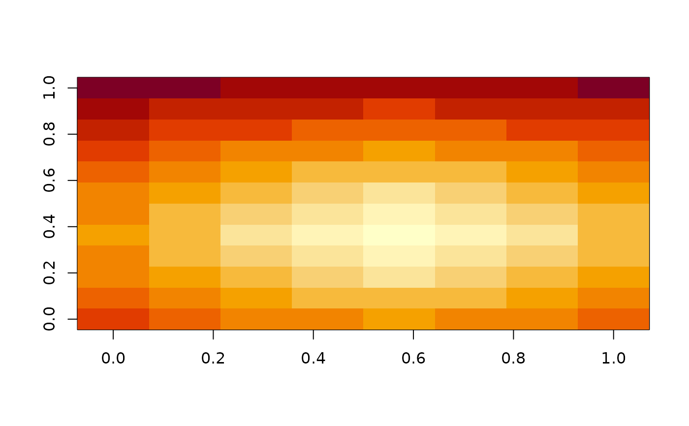

Relative Distance for an Entire Plate
Examples
well_dis_plate(5, 5)
#> [,1] [,2] [,3] [,4] [,5] [,6] [,7] [,8]
#> [1,] 5.656854 5.000000 4.472136 4.123106 4 4.123106 4.472136 5.000000
#> [2,] 5.000000 4.242641 3.605551 3.162278 3 3.162278 3.605551 4.242641
#> [3,] 4.472136 3.605551 2.828427 2.236068 2 2.236068 2.828427 3.605551
#> [4,] 4.123106 3.162278 2.236068 1.414214 1 1.414214 2.236068 3.162278
#> [5,] 4.000000 3.000000 2.000000 1.000000 0 1.000000 2.000000 3.000000
#> [6,] 4.123106 3.162278 2.236068 1.414214 1 1.414214 2.236068 3.162278
#> [7,] 4.472136 3.605551 2.828427 2.236068 2 2.236068 2.828427 3.605551
#> [8,] 5.000000 4.242641 3.605551 3.162278 3 3.162278 3.605551 4.242641
#> [,9] [,10] [,11] [,12]
#> [1,] 5.656854 6.403124 7.211103 8.062258
#> [2,] 5.000000 5.830952 6.708204 7.615773
#> [3,] 4.472136 5.385165 6.324555 7.280110
#> [4,] 4.123106 5.099020 6.082763 7.071068
#> [5,] 4.000000 5.000000 6.000000 7.000000
#> [6,] 4.123106 5.099020 6.082763 7.071068
#> [7,] 4.472136 5.385165 6.324555 7.280110
#> [8,] 5.000000 5.830952 6.708204 7.615773
image(well_dis_plate(5, 5))
